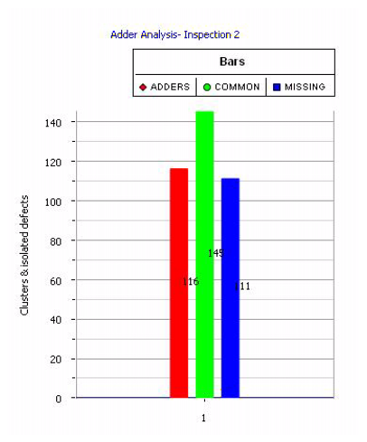

You can view
analysis results as a graph in the Results Viewing Area.
Procedure
- Select an analysis type from
the Analysis Types pane.
- Click the Graph View radio button in
the Results Viewing Area to display the results as a graph.
Results
A sample result in graph view for
an Adders Analysis for one inspection is shown in Figure 2. The data value for each histogram
is displayed on top of it.
Figure 2. Results for Adders Analysis
for an Inspection